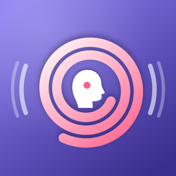

Kopfkreisel
Dein Kopfschmerz-Tagebuch für iPhone und iPad
So funktioniert’s
- Kopfschmerz? Ein Tipp. Auf „leicht“, „mittel“ oder „stark“ tippen – die Attacke läuft. Auch per Siri („Kopfschmerz starten in Kopfkreisel“) oder Kurzbefehl.
- Medikament notieren: Die zuletzt genutzten Mittel stehen als große Tasten bereit. Nach 2 Stunden fragt die App kurz: wirkt oder wirkt nicht?
- Details später: Wo, wie, Begleitsymptome, Aura, vermutete Auslöser und eigene Notizen – jede Karte ist überspringbar.
- Abend-Check: Wie war heute? Stimmung, Schlaf, Stress, Koffein, Periode und eine Tagesnotiz – in 20 Sekunden, auch an guten Tagen.
- Auswertung & Arztbericht: Kopfschmerz- und Migränetage, Medikamententage mit Ampel, Wirksamkeit, Muster, Stimmung – und ein PDF-Bericht, dessen erste Seite alles Wichtige zeigt.
Kontakt
Du hast eine Frage, einen Fehler gefunden oder einen Wunsch für die App? Schreib mir gern:
Ich antworte in der Regel innerhalb weniger Tage.
Häufige Fragen
Wo werden meine Daten gespeichert?
Nur auf deinem Gerät – und, wenn du es unter Mehr › Speicher einschaltest, in deiner eigenen privaten iCloud, damit iPhone und iPad gleich sind. Es gibt keinen Kopfkreisel-Server, kein Konto und kein Tracking. Daten verlassen dein Gerät nur, wenn du selbst etwas exportierst oder teilst, z. B. den Arztbericht.
Wie zählt Kopfkreisel Kopfschmerztage?
Ein Kopfschmerztag ist ein Kalendertag mit mindestens einer Attacke; eine Attacke über Mitternacht zählt für beide Tage. Tage ohne Eintrag gelten als unbekannt, nicht als kopfschmerzfrei – deshalb ist der Abend-Check auch an guten Tagen wichtig. Werte „pro 30 Tage“ beziehen sich auf die dokumentierten Tage.
Was zeigt die Medikamenten-Ampel?
Die Zahl der Tage mit Einnahme in den letzten 30 Tagen (nicht die Zahl der Tabletten), getrennt nach Substanzklasse. Die Fachliteratur (ICHD-3) nennt für Triptane, Ergotamine, Opioide und Kombinationsmittel 10 Tage, für einfache Schmerzmittel 15 Tage pro Monat als Grenze für einen Übergebrauch. Die Ampel zeigt das als neutrale Zählung – bitte sprich Behandlung und Medikamente immer ärztlich ab.
Was ist ein „Migränetag“ in der Auswertung?
Ein Tag mit einer Attacke, deren Merkmale der Migräne-Beschreibung der Internationalen Kopfschmerzgesellschaft entsprechen, die du selbst als Migräne markiert hast oder bei der ein Triptan bzw. Gepant gewirkt hat. Das ist eine Zählregel, keine Diagnose.
Wie erstelle ich den Arztbericht?
Mehr › Arztbericht: Zeitraum (30 Tage bis 12 Monate) und Umfang wählen, auf Wunsch Name und Notizen weglassen, dann bestätigen. Das PDF teilst du über das Teilen-Menü – per Mail, AirDrop, Drucken oder Dateien. Trägst du deinen nächsten Arzttermin ein, erinnert dich die App zwei Tage vorher.
Kann ich das Design ändern?
Ja – beim Start und unter Mehr › Design gibt es sechs Farbwelten (Violett, Neon-Nacht, Ozean, Wald, Graphit, Koralle). Das App-Icon wechselt passend mit.
Wie sichere ich meine Daten oder ziehe auf ein neues Gerät um?
Mit iCloud-Sync geschieht das automatisch. Ohne Sync: Mehr › Daten › Vollständige Sicherung (JSON) exportieren und auf dem neuen Gerät unter Sicherung wiederherstellen einlesen.
Kostet die App etwas?
Nein. Kopfkreisel ist kostenlos und ohne Werbung. Wer möchte, kann unter Mehr ein freiwilliges Trinkgeld geben – es schaltet nichts frei.
Notfall: Schlagartig einsetzender, stärkster Kopfschmerz, neue Lähmungen, Sprach- oder Sehstörungen, Fieber mit Nackensteife, Verwirrtheit oder Kopfschmerz nach einer Kopfverletzung – sofort 112 anrufen.
Hinweis: Kopfkreisel dokumentiert, zählt und visualisiert deine eigenen Einträge. Die App stellt keine Diagnose, gibt keine Therapie- oder Dosierungsempfehlung und ersetzt keine ärztliche Beratung.